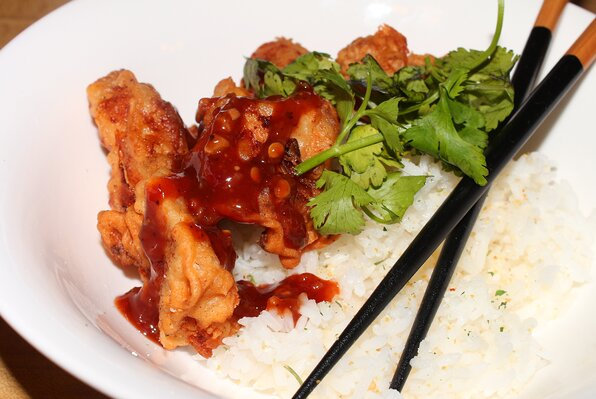

Korean Fried Chicken
I've always considered myself something of a fried chicken expert. I've pretty much had every single style known to man and this Korean fried chicken is officially my favorite. No other method I've come across has the same combination of tender, juicy, flavorful chicken and plate-scratching crispiness as this recipe does. It's simply a must-try!

Ingredient:
Marinade
- 1 pound skinless, boneless chicken thighs, quartered
- ½ yellow onion, grated
- 4 cloves garlic, minced
- 1 teaspoon fine salt
Batter
- ¾ cup cornstarch
- 1 teaspoon white sugar
- ½ cup self-rising flour
- ½ teaspoon ground black pepper
- ¼ teaspoon salt
- 1 cup very cold water, or as needed
- oil, or as needed
Steps
- Stir chicken, onion, garlic, fine salt, and 1/2 teaspoon black pepper together in a bowl until chicken is coated. Cover the bowl with plastic wrap and refrigerate, 4 hours to overnight.
- Heat oil in a deep-fryer or large saucepan to 340 degrees F (171 degrees C).
- Whisk cornstarch, flour, sugar, 1/2 teaspoon black pepper, and 1/4 teaspoon salt together in a large bowl. Gradually whisk ice water into flour in until mixture resembles a smooth pancake batter. Transfer chicken to batter and stir to coat chicken completely.
- Working in batches, cook chicken in preheated oil for 4 minutes. Transfer cooked chicken to a cooling rack.
- Increase oil temperature in the deep-fryer or large saucepan to 375 degrees F (190 degrees C).
- Working in batches, cook chicken again in hot oil until golden brown and crispy on the outside, 3 to 4 minutes. Transfer to a wire rack to drain.
Cook's Notes:
You can substitute 1/2 cup all-purpose flour plus 3/4 teaspoon baking powder and 1/4 teaspoon salt for the self-rising flour.
Serve with Korean Fried Chicken Sauce.
Nutritional facts
Per Serving: 472 calories; protein 18.6g; carbohydrates 44.4g; fat 23.8g; cholesterol 70.7mg; sodium 1149.8mg.